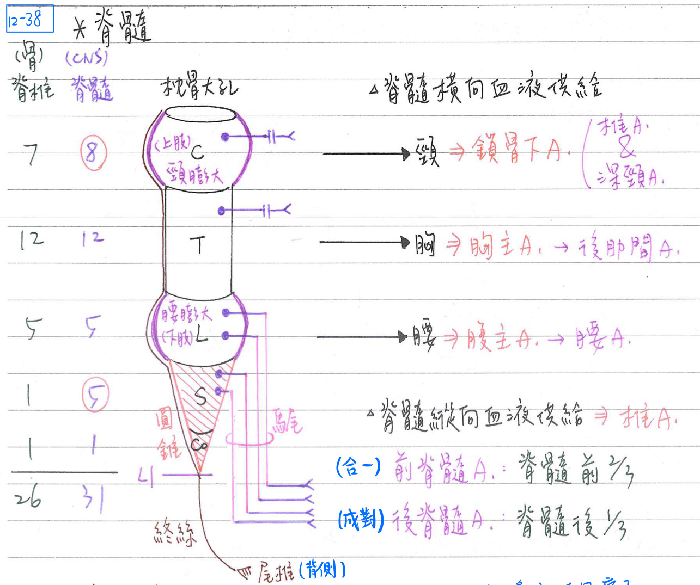
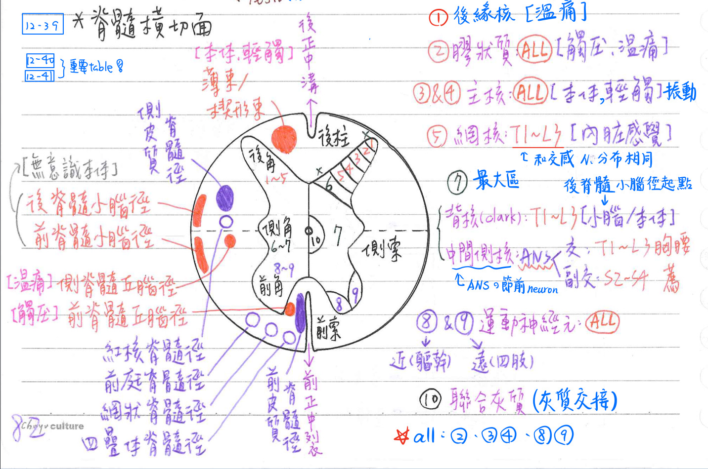
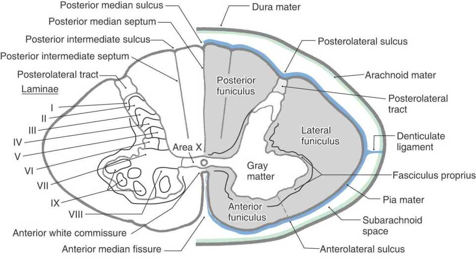
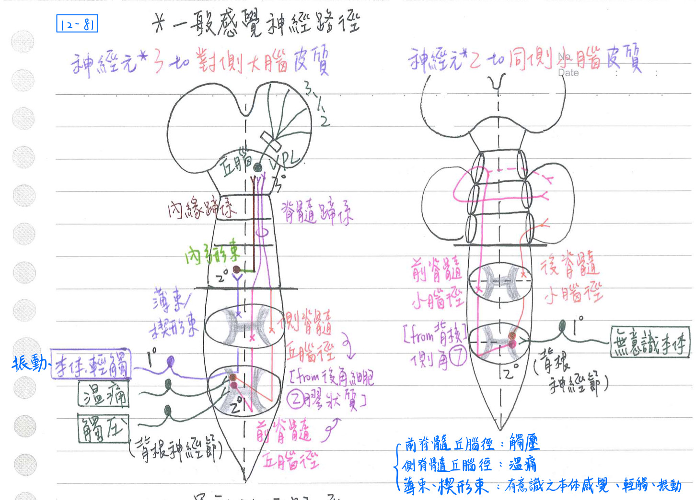
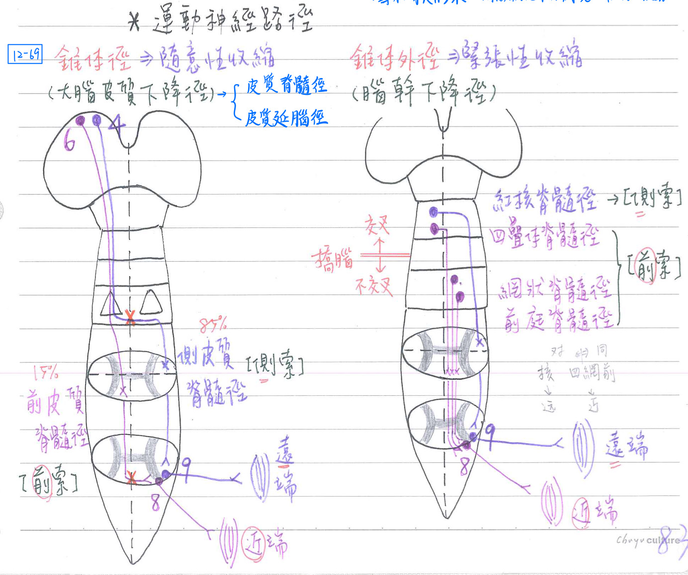

😵💫 CNS-脊髓[幾乎每年考]&脊隨路徑
脊髓-大體解剖(gross anatomy)
- 共分五段31節
脊椎(bone) 脊髓(CNS) 脊神經(PNS) 頸(C) 7 8 8 胸(T) 12 12 12 腰(L) 5 5 5 薦(S) 1 5 5 尾(Co) 1 1 1 - 自枕骨大孔~L1/L2，長42~45cm
- 具二膨大：體積⇒頸膨大>腰膨大
- 頸膨大(cervical enlargement)：C5~T1；支配上肢之臂神經叢
- 腰膨大(lumbar enlargement)：T11~L2；支配下肢之腰、薦神經叢
- 末端形成圓錐(conusmedullaris)：位於★L1~L2
- 由於脊髓較脊柱短25cm，故下端腰、薦神經形成馬尾(cauda equina)
- 終絲：軟腦膜特化，位於馬尾中間，呈藍色；附著於尾椎之背側
脊髓-血液供給
- 縱向供給：主要由椎動脈(vertebral a.)之分枝供給，包括
- 前脊髓動脈(ant. spinal a)：供應脊髓前2/3
- 後脊髓動脈(post. spinal a)：供應脊髓後1/3
- 横向供給：主要由★[110-2]節脊髓動脈(segmental spinal a.)供給，而其源自於：
- 頸部：★[110-2]椎A(←鎖骨下A)&深頸A(←肋頸動脈幹←鎖骨下A)
- 胸部：★[110-2]後肋間A (←胸主A)
- 腰部：腰A (←腹主A)

脊髓-橫切面
- 以前正中裂(fissure) & 後正中溝(sulcus)分成左、右兩半
- <cf> 大腦灰質在外，脊隨灰質在內
灰質(gray matter)：含神經細胞本體，位於內部(呈H型)
- 主分3群：
- ★[110-1]前角細胞[(ant. horn, VIII~IX)；8~9]：體運動神經元(體輸出)
- 側角細胞[(lat. horn, VI~VII)；6~7]：自主神經元(内臓輸出)&本體咸覺
- 後角細胞[(post. horn, I~V)；1~5]：一般感覺神經元
- [重要]雷氏分層(Rexed's cytoarchitectural lamination,1954)：10層
- I：後緣核(posterior marginal nucleus)→溫、痛
- II：膠狀質(substantia gelatinosa, all=C1~Co)→★[110-2]觸、壓、溫、痛
- I & II含豐富的 substance P(疼痛)以及★[110-1]enkephalin(止痛)
- III、IV：主核(nucleus proprius, all=C1~Co)→輕觸/本體感覺/振動
- V：網核(nucleus reticularis, T1~L3)→內臓感覺 <cf>交感神經也是T1~L3
- VI：後角底(base of dorsal horn)→僅在兩膨大(即T4~L2缺)
備註
照paper講法來推的話應該是T2~T10缺??
- VII：最大區
- ★[108-1]背核(nucleus thoracicus=nucleus dorsalis of Clarke, T1~L3)：
- 本體感覺(肌梭&肌腱器官)
- ★★[110-1]後脊髓小腦徑之起點
- 中間側核(nucleus intermediolateralis)：
- 交感神經(胸腰內臟輸出)系統之節前神經元(T1~L2/L3)
- 副交感神經(腦薦內臟輸出)系統之節前神經元(S2~S4)
- ★[108-1]背核(nucleus thoracicus=nucleus dorsalis of Clarke, T1~L3)：
- VIII、IX：★運動神經元(α & γ moto neurn, all=C1~Co)
- 內側核(VIII)：頸部、軀幹之肌肉運動
- 中央核:：C1~C5→副神經脊髓枝；C3~C5→膈神經
- 外側核(IX)：四肢之肌肉運動
[94]★腹外側：支配四肢肌肉伸展
- X：脊髓中央管周圍，交叉性神經核=灰質交接(gray commissure)
白質(white matter)：含神經纖維，位於外部
- 前索/前柱(ant. cord/funiculus/column)：上升徑、下降徑
- ★側索/側柱(lat. cord/funiculus/column)：上升徑、下降徑
- 前方：側脊髓丘腦徑(升)、前脊髓小腦徑(升)
- 後方：側皮質脊髓徑(降)、紅核脊髓徑(降)、後脊髓小腦徑(升)
- 後柱(posterior column)=背索(dorsal funiculus)：上升徑(&少量下降徑)
- 前白質交接( anterior white commssure)：含交叉至對側之神經織维，大部分之神經路徑經前灰質&白質交接(ant. gray & white commissure)交叉至對側
- 前外側溝(anterolateral sulcus)：前根神經纖維離開脊髓處
- 後外側溝(posterolateral sulcus)：★後根神經繊維進入脊髓處
- Posterior median sulcus：將後側脊髓分為左、右兩半


[重要]脊髓-上升徑(感覺徑)
- table
細胞本體 路徑 終點 功能 ★前脊髓丘腦徑 脊髓後角(II) 對側前索
→★★[109-2]經前白質聯合丘腦(VPL) 觸壓 ★★側脊髓丘腦徑 脊髓後角(II) 對側側索
→★★[109-2]經前白質聯合丘腦(VPL) 溫痛 ★[109-1]
薄束(內)
楔形束(外)★[110-1]
背根神經節★同側後柱 延腦
(薄核、楔形核)
→內側蹄系本體(→大腦)
振動、★輕觸覺(鑑別覺)
★精細觸覺(辨形、材質)
★[110-2]也跟止痛有關★[107-2]後脊髓小腦徑 脊髓背核(VII) 同側側索 小腦(同側)
(經下小腦角)“下意識”本體感覺
(→小腦)前脊髓小腦徑 脊髓背核(VII) 對側側索 小腦(同側)
(經上、中小腦角)“下意識”本體感覺
(→小腦)
- [較少考]脊髓頂蓋徑(spinotectal tract)：脊髓→中腦之上丘(經對側側索)
- 調控脊髓視覺反射(spinovisual reflex)，使眼球、頭部朝向刺激方向
- [較少考]脊髓網狀徑(spinoreticular tract)：脊髓→腦幹之網狀結構(經同側側索)
- 調控意識狀態(consciousness)，使因應刺激而更清醒、警覺
- 前外側系統(anterolateral system)=★前脊髓丘腦徑+側脊髓丘腦徑+脊髓頂蓋徑+脊髓網狀徑(觸壓、溫痛) [前觸壓+外溫痛]
- ★舊脊髓丘腦徑(paleospinothalamic)=脊髓頂蓋徑+脊髓網狀徑
(由C fiber傳遞慢速痛等) - 新脊髓丘腦徑(neospinothalamic)=側脊髓丘腦徑(由 Aδ fiber傳遞快速痛等)
備註
新脊髓丘腦徑不是前脊髓丘腦徑(趙神有錯)

[重要]脊髓-下降徑(descending tract)：運動徑
- 經脊髓前索之神經路徑(15%)：支配近端肌肉
- 經脊髓側索者之神經路徑(85%)：支配遠端肌肉
⇒ [hint：遠端肌肉做比較精細的運動，需要的神經比較多] - 大腦皮質下降徑(錐體徑)：隨意性收縮(產生隨意性運動)
- 腦幹下降徑(錐體外徑)：緊張性收缩(以提供運動一穩定背景)
- 起點在橋腦以上→對側
- 起點在橋腦以下→同側

| 名稱 | 起點 | 路徑 | 終點 | 交叉 | 功能 | |
|---|---|---|---|---|---|---|
| 錐體徑 (起點：大腦皮質) | 前皮質脊髓徑 | 大腦皮質 (額葉等) | 同側前索 | 脊隨前角 (對側) | 於脊隨交叉 | 近端肌肉運動 (頸部、軀幹) |
| 錐體徑 | ★[108-2]★[110-2] 側皮質脊髓徑 | 大腦皮質 (額葉等) | 對側側索 | 脊隨前角 (對側) | 於延腦交叉 | 遠端肌肉運動 |
| 錐體外徑 (起點：腦幹) | 紅核脊髓徑 | 紅核 (中腦) | 對側側索 | 脊隨前角 (對側) | 交叉 | 遠端肌肉運動 和大腦(額葉)&小腦(後葉)密切聯繫，★協調精細運動 |
| 錐體外徑 | 四疊體脊髓徑 (頂蓋脊隨徑) | ★四疊體/頂蓋 (中腦) | 對側前索 | 脊隨前角 (對側) | 交叉 | 近端肌肉運動 和聽覺反射、視覺反射有關 →因應光線、聲音刺激而改變頭部姿勢 |
| 錐體外徑 | 網狀脊髓徑 | 網狀結構 (腦幹) | 同側前索 | 脊隨前角 (同側) | X | 近端肌肉運動 和一般感覺、睡眠醒覺、上下肢協調有關 |
| 錐體外徑 | 前庭脊髓徑 | 前庭核 (腦幹) | 同側前索 | 脊隨前角 (同側) | X | ★近端肌肉運動 和內耳(前庭)&小腦(小葉結節葉)有關，★維持平衡 |
| 錐體外徑 | 縫核脊髓徑 (raphespinal) | 橋腦縫核 | 脊髓後角(II) | ★[110-2]與内生性止痛有關(5-HT) | ||
| 錐體外徑 | 下視丘脊髓徑 (hypothalamospinal) | 下視丘後核/前核 | 脊髓側角 | 與自主神經系統(ANS)有關 (VII的中間側核) |